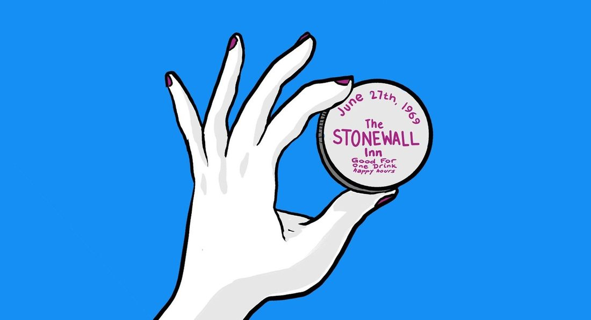
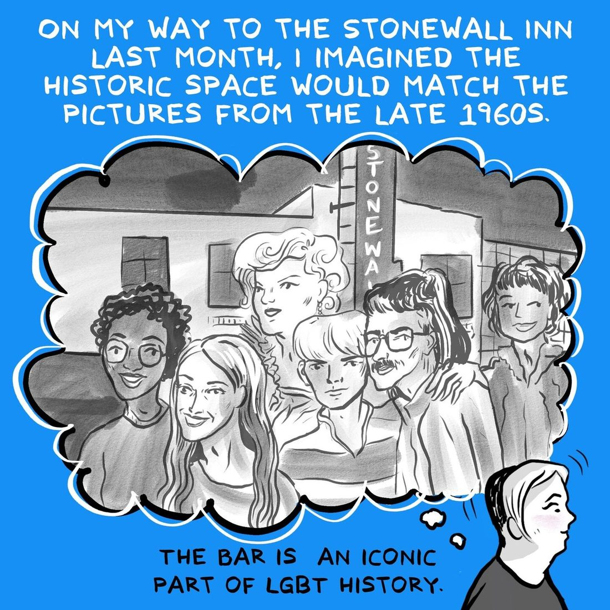
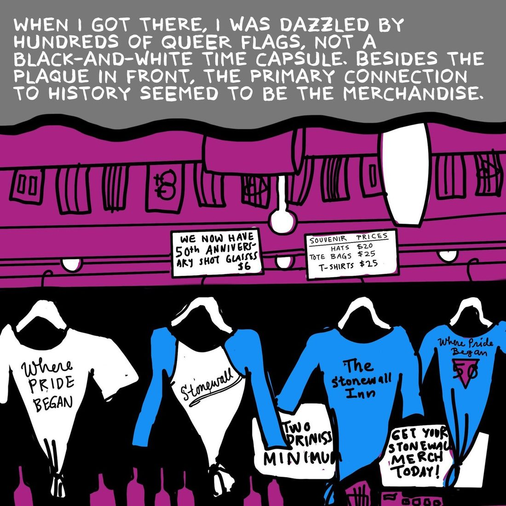
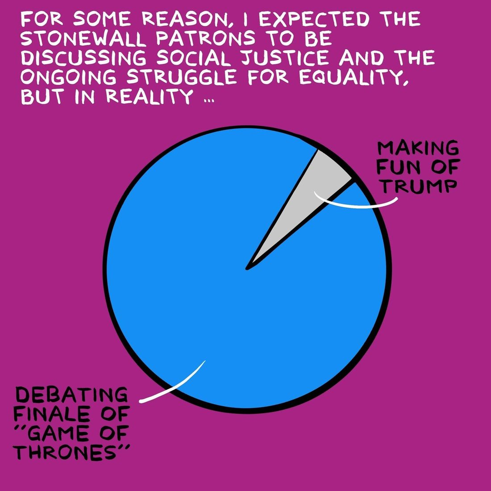
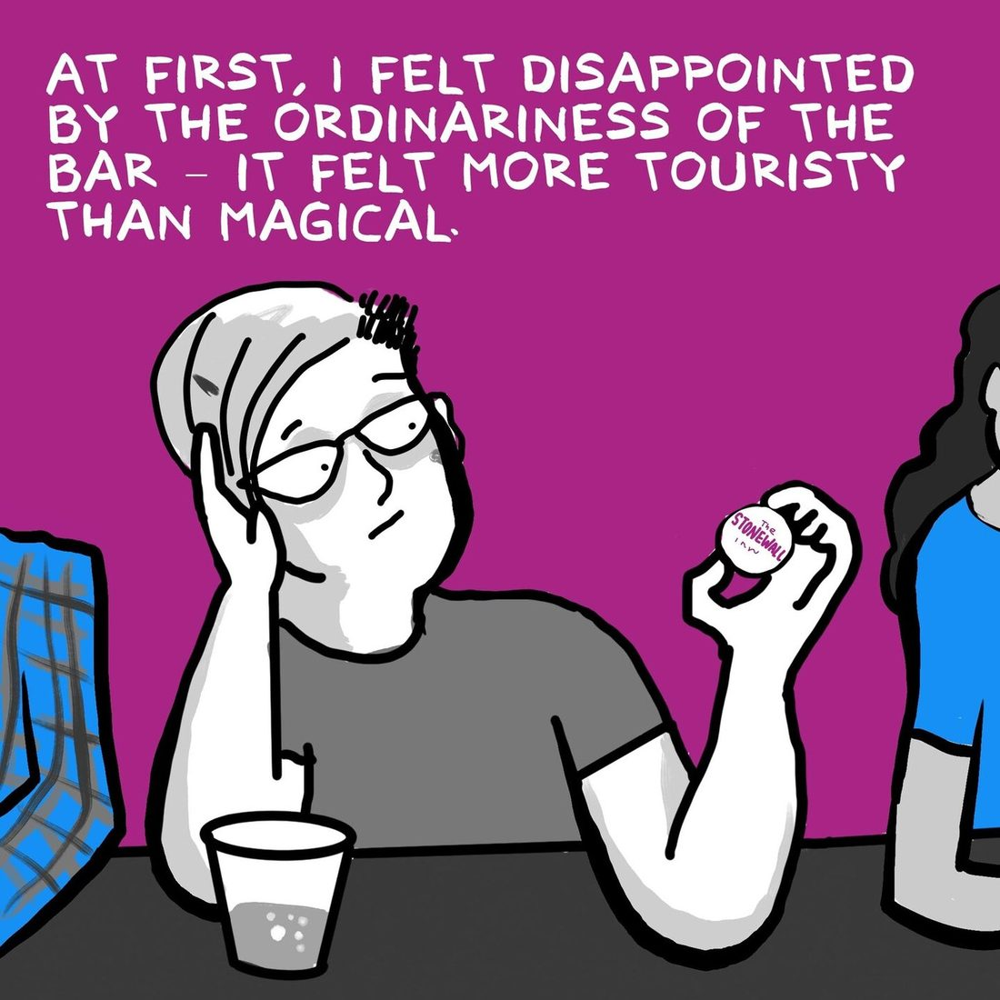
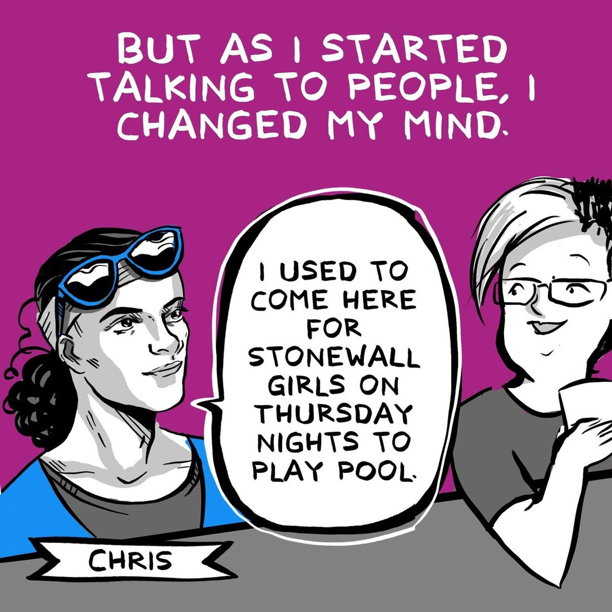
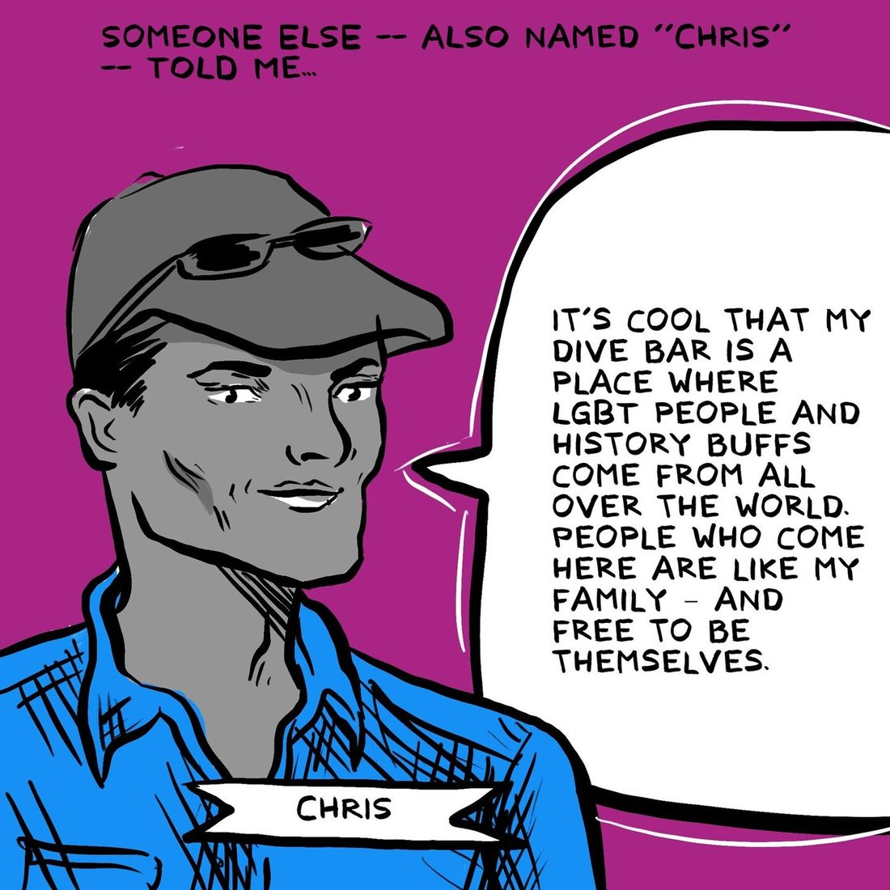
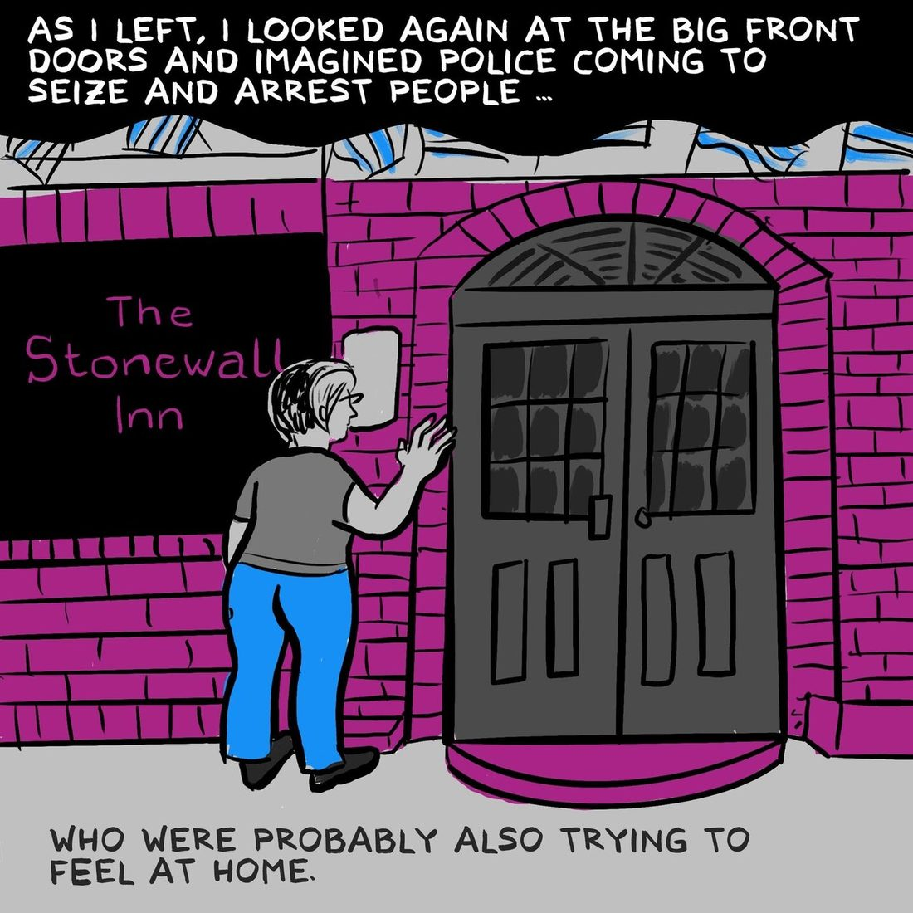
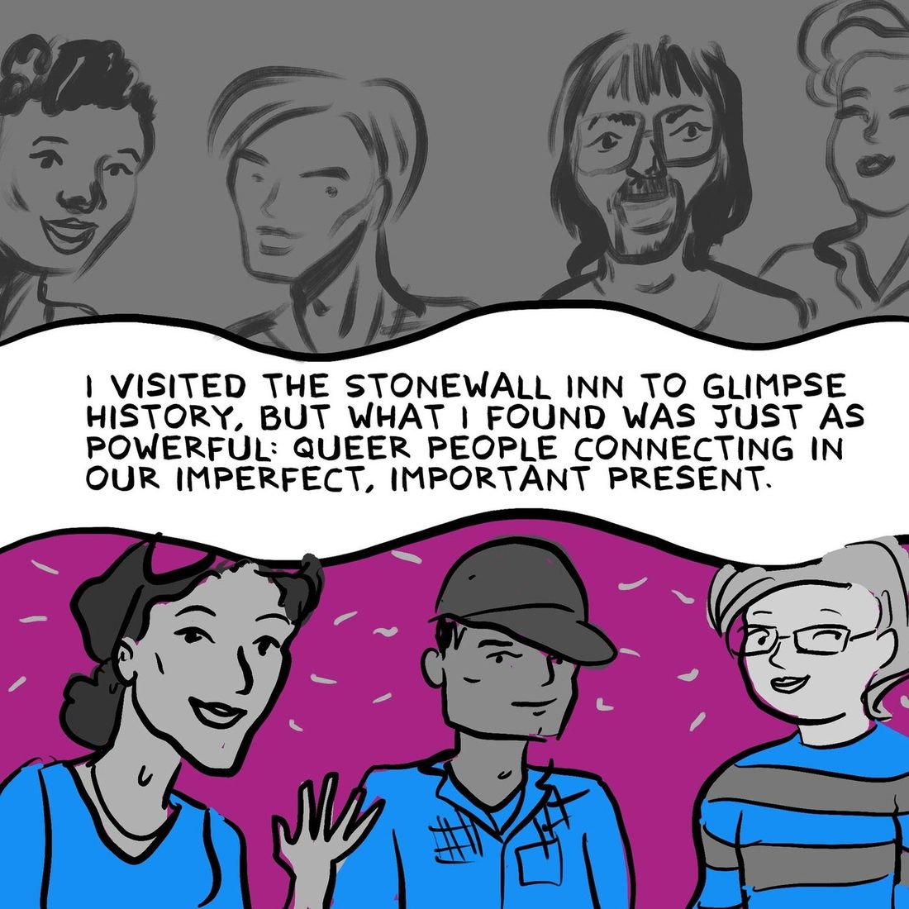
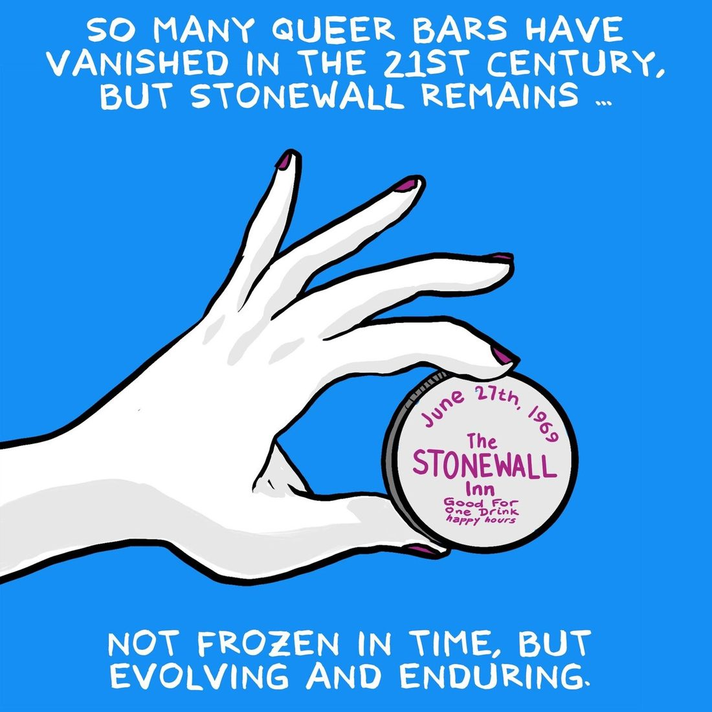

I went to the Stonewall Inn expecting history. I found something better.
Reported, written and illustrated by Elizabeth Beier · Art direction by Rachel Orr
A reported visit to the bar where Pride began, fifty years on, where the merchandise is louder than the plaque and the people are the point.











Published by The Lily. Republished here in full by the author. Back to all work →